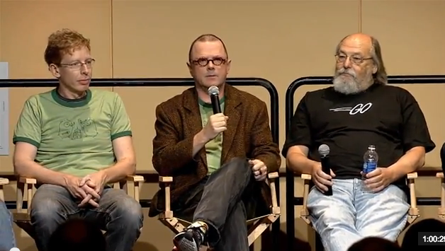

TinyGo is Go for Tiny devices.
...also for WebAssembly (WASM) and CLI Tools.
Thanks! Tiny Presentation! Questions?
Just Joking!

Don't know Go?
Don't go! We'll cover it lightly.
Go was created by Google in 2007.

By Robert Griesemer, Rob Pike & Ken Thompson...
...who disliked the chaos of C++ at Google.
v1.0 was released in 2012, latest is v1.15.2.
Features of Golang
- statically typed, easy to follow language
- extremely fast compilation
- efficient execution on modern multicore systems
- built-in concurrency & garbage collection
- reliable dependency management -
go get - built in testing, profiling & race condition checking
- opinionated -
GoDoc, gofmt
Simplest Go Program
package main
import "fmt"
func main() {
fmt.Println("Hello Voyager!")
}
$ go run hello-voyager.go > Hello Voyager!
What's Tiny then?

...It's small, but we want Tiny.
Common Hardware
| Arduino Uno | Arduino Nano | |
|---|---|---|
| Cores | 1 | 1 |
| CPU | ATmega32P | ATmega32P |
| Clock | 16Mhz | 16Mhz |
| Vinput | 5v | 5v |
| Analog IO | 6 | 8 |
| Digital IO / PWM | 14/6 | 14/6 |
| EEPROM / SRAM (kb) | 1.1 | 1.0 |
| Flash (kb) | 1.1 | 1.0 |